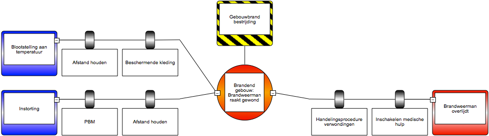
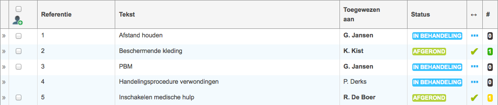
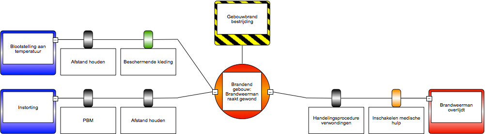
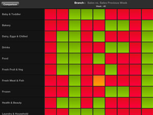
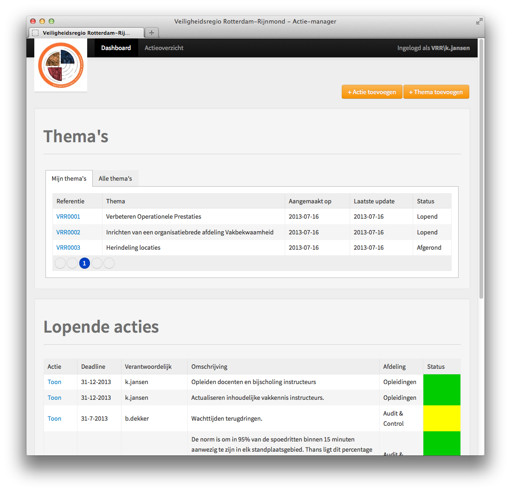

Dit stappenplan beschrijft de voorgestelde werkwijze voor het gebruik van BowTieXP en de Changer Audit Tool voor Risico Inventarisatie & Evaluatie voor Veiligheidsregio’s.

Doe op basis van Bowtie-diagrammen de risico inventarisatie. Hiervoor zullen een (groot) aantal verschillende Bowtie-diagrammen nodig zijn, om de volledige lading van de werkzaamheden van een Veiligheidsregio te ‘dekken’. Uit alle diagrammen zullen barrières komen: menselijke, procedurele, of technische oplossingen om te voorkomen dat bedreigingen in situaties zullen leiden tot een ongewenste situatie. Op basis van deze Bowties kan een barrière-lijst worden opgesteld:
| # | Naam | Eisen | MoC | Verantwoordelijk |
|---|---|---|---|---|
| 1 | Afstand houden | |||
| 2 | Beschermende kleding | |||
| 3 | PBM | |||
| 4 | Handelingsproce- dure verwondingen | |||
| 5 | Inschakelen medische hulp |
Voor het creëren van de Bowtie-diagrammen kan BowTieXP worden gebruikt.
Voor alle barrières moeten eisen worden opgesteld op basis waarvan kan worden geconstateerd of een barrière geplaatst is en functioneert.
| # | Naam | Eisen | MoC | Verantwoordelijk |
|---|---|---|---|---|
| 2 | Beschermende kleding |
- Helm - Pak - Schoenen |
Stel daarnaast op basis van de eisen de ‘Means of compliance’ vast, op basis waarvan kan worden gesteld of aan de eisen wordt voldaan.
| # | Naam | Eisen | MoC | Verantwoordelijk |
|---|---|---|---|---|
| 2 | Beschermende kleding | - Helm - Pak - Schoenen | - Helm gecertificeerd onder ISO xxxx:xxxx - Pak van erkende leverancier - Pak met brandveiligheids- cijfer van 7 of hoger - Schoenen met verstevigde neuzen - Schoenen nabewerkt met brandwerend materiaal |
Wijs verantwoordelijken toe die zorg moeten dragen voor het plaatsen of updaten van de barrière binnen de Veiligheidsregio of op hun locatie (afhankelijk van de ‘scope’ van de barrière).
| # | Naam | Eisen | MoC | Verantwoordelijk |
|---|---|---|---|---|
| 2 | Beschermende kleding | - Helm - Pak - Schoenen | - Helm gecertificeerd onder ISO xxxx:xxxx - Pak van erkende..... | Afdeling kleding & blusmiddelen: K. Kist |
Voor het vastleggen van de eisen kan BowTieXP of een andere tool worden gebruikt.
Op basis van de geformuleerde barrières, eisen, en Means of compliance kan voor iedere barrière worden vastgesteld of de barrière geïmplementeerd is en of hij op de juiste manier geïmplementeerd is. Dit vormt de risico evaluatie.
| # | Naam | Eisen | MoC | Verantwoordelijk | |
|---|---|---|---|---|---|
| 2 | Beschermende kleding | - Helm - Pak - Schoenen | - Helm gecertificeerd onder ISO xxxx:xxxx - Pak van erkende..... | Afdeling kleding & blusmiddelen: K. Kist | IN ORDE |
| 5 | Inschakelen medische hulp | - Procedure beschikbaar - Afspraken met medische diensten | - Procedure aanwezig op ieder voortuig - Procedure in Nederlandse taal - Aanrijtijd medische diensten lager dan 6 minuten na melding | Afdeling gezamenlijke hulpdiensten: R. De Boer | VOLDOET NIET GEHEEL AAN EISEN |
Zo kan bijvoorbeeld voor barrière 2 worden vastgesteld dat deze in orde is, de beschermende kleding bestaat voor al het personeel uit helm, pak en schoenen, die allemaal aan de Means of compliance kunnen voldoen.
Voor barrière 5 zou kunnen worden vastgesteld dat er wel een procedure beschikbaar is, maar de afspraken niet zijn vastgelegd en de aanrijtijd niet kan worden gegarandeerd.
Wanneer barrières een andere status dan ‘in orde’ hebben, volgt er een actie voor de verantwoordelijke afdeling of persoon, die er voor moet gaan zorgen dat de barrière z.s.m. weer het niveau ‘in orde’ krijgt.
Voor het uitvoeren van een audit zoals bovenstaand voorbeeld kan de Changer Audit Tool worden gebruikt.
Rapportage kan worden gebracht vanuit de Changer Audit Tool, of in de BowTieXP software, zoals onderstaande voorbeelden laten zien.


Daarnaast is rapportage op basis van Roambi mogelijk, waardoor het management de rapporten in de hand kan houden op een iPad of iPhone:

Tijdens alle stappen uit het bovenstaande stappenplan zullen acties naar voren komen:
(1) het instellen van barrières, als dat nog niet is gebeurd,
(2) het vaststellen van de eisen en/of Means of compliance voor een of meerdere barrières,
(3) het uitvoeren van een of meerdere onderdelen van audits, en
(4) extra acties die naar voren komen na analyse van de rapportages.
Het beheren van deze acties dient centraal in de organisatie te gebeuren om te waarborgen dat alle acties daadwerkelijk worden opgevolgd. Voor het creëren, uitzetten en tracken van deze acties kan de Changer Actie Management Tool worden gebruikt.
